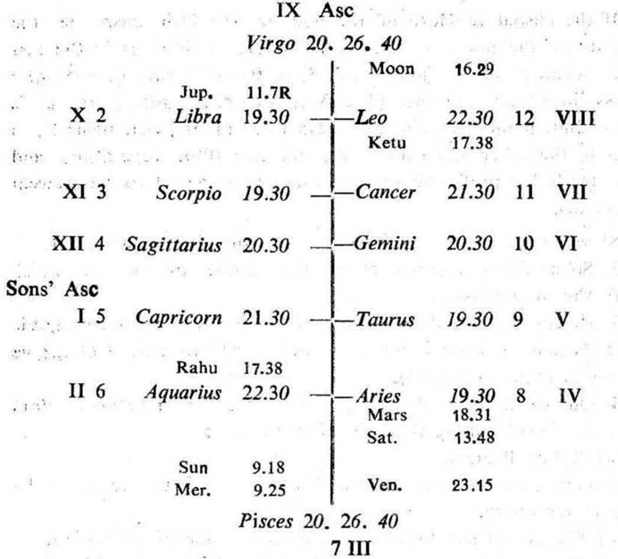
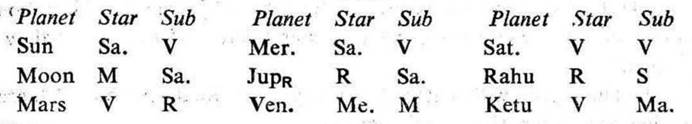

Question. When will my son recover from bad health?
Number. 119 (out of 249)
Place of Judgment. 23°N 2', 72°E 35'.
Time of Judgment. 23-3-1970, Monday; 10-25 p.m. I.S.T.


If the cuspal sub lord of the Asc. be the significator of the badhaka and maraka houses, the life is short.
If the cuspal joint rulers (the sign lord, star lord and sub lord) of the Asc. or the 8th cusp be the significators of the badhaka and maraka houses, their joint period is very critical for life.
In this horary map the mother asked the question about her son. Moon occupies the 12th (worries to the querent). So consider the 5th cusp as the Asc. for the son and proceed. For convenience the roman letter is given to each house counted from the 5th cusp.
Moon is aspected by the owner of VIII (Sun) and the owner of VI (Mercury). It is in its own star owning VII and occupying VIII. It is in the sub Saturn owning I the Asc. of the son and II, and occupying III. So Moon is the significator of VII (maraka), VIII (longevity) and connected with I (health), II (maraka), III (longevity) and VI (sickness). Thus Moon clearly indicates that the querent is worried about the health, sickness and longevity of her son.
It is jointly ruled by Saturn (sign lord), Moon (star lord) and Venus (sub lord). The sub lord of the Asc. is Venus. It is in the star Mercury owning VI and occupying II. It is in the sub Moon owning VII and occupying VIII. So it is the significator of the maraka house II and connected with the maraka house VII.
We may now examine the strength of the star lord and the sub lord of Venus. Venus's star lord Mercury is in conj. with the owner of VIII (Sun) and aspected by the owner of the maraka house VII (Moon). Venus's sub lord Moon is the significator of the maraka houses as discussed above. Thus both the star lord and the sub lord of Venus are evil. Consequently, the cuspal sub lord of the son's Asc. (Venus) becomes evil for the son's longevity and it denotes short life.
It is jointly operated by Sun (sign lord), Venus (star lord) and Saturn (sub lord).
(a) The cuspal sign lord of VIII Sun is in the star Saturn owning the son's Asc. and II; it is in the sub Venus which is the maraka significator. So Sun is the significator of the maraka houses II and VII. Sun's star lord Saturn is in conj. with Mars the owner of the badhaka house XI and aspected by the owner of XII (Jupiter); so Saturn becomes evil. Sun's sub lord Venus is in association with the owner of VI (Mercury) and the owner of VIII (Sun); so Venus becomes evil.
Consequently, the cuspal sign lord of VIII Sun becomes connected with the badhaka and maraka houses; and it becomes evil for the son's longevity.
(b) The cuspal star lord of VIII Venus is the significator of the maraka houses II and VII as previously discussed.
(c) The cuspal sub lord of VIII Saturn is in the star and sub of Venus which is the maraka significator of II and VII; so Saturn is the maraka significator.
Thus, the sign lord, star lord, and sub lord of VIII cusp all the three are the significators of the badhaka and maraka houses.
At the time of judgment (Moon Dasha balance 5Y 1M 19D) the querent's son is running the joint period of Moon (the star lord of the son's Asc.), Saturn (the sign lord of the son's Asc. and the sub lord of VIII cusp) and Venus (the sub lord of the son's Asc. and the star lord of VIII cusp). This period expires on 11-6-1970. They all are the significators of the maraka houses as discussed above. So they denote danger to the son's life.
Now the joint period of Moon, Saturn and Sun (the sign lord of VIII cusp) starts from 11-6-1970 and lasts upto 9-7-1970. Moon and Saturn are the maraka significators; while Sun is both the badhaka and maraka significator as previously discussed. So this period will prove fatal to the life of the querent's son.
The querent's son expired on 18-6-1970 during this very joint period of Moon, Saturn and Sun. Moon was transitting in Scorpio 12°54′ in the star Saturn (the period ruler).